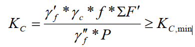
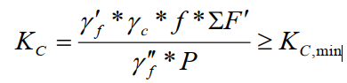

Poydevorning siljishga bo‘lgan turg‘unligini tekshirish
Tekshirish shundan iboratki, siljish(surilish)ga turg‘unligini ifodalovchi
koeffitsienti “KC” hisoblab topiladi va QMQ bo‘yicha ruxsat etiladigan eng kichik
miqdor “KC, min” dan katta bo‘lishi tekshiriladi. Poydevorning siljishga turg‘unligini
ifodalovchi koeffitsient quyidagi formula yordamida hisoblanadi.

Hisoblab topilgan qiymat“KC” QMQ bo‘yicha ruxsat etiladigan eng kichik
miqdor “KC, min” bilan taqqoslanadi, taqqoslashda quyidagi shart bajarilishi lozim:
KC >= Kc, min
Bu yerda: EF' - suvning poydevorga, tayanchning suv ostidagi qismiga va
poydevor chetlarida joylashgan gruntga ko„rsatadigan ko‘taruvchi ta‘siri hisobga
olingan holatdagi vertikal kuchlar yig‘indisi:
EF' = F + F'T + F"T + F'P + F'gr
P - siljituvchi kuch (gorizontal yo„nalishdagi kuch);
KC, min = 1,15 - Qurilish me‘yorlari va qoidalari talabi-bo‘yicha II
sinfga mansub gidrotexnik inshootlar uchun siljishga bo‘lgan turg‘unlik
koeffitsientining ruxsat etilgan minimal qiymati
f - poydevor ostki yuzasining zamin gruntiga nisbatan ishqalanishini
hisobga oluvchi koeffitsient ( 4-jadvalga muvofiq qabul qilinadi).

| Zamin gruntining turi | f |
|---|---|
| Gil(soztuproq), gilli ohaktosh, slanetslar va hk | 0.25 |
| Supes va suglinok | 0.3 |
| Mayda va o'rtacha qumlar | 0.4 |
| Yirik qumlar va shag'al | 0.5 |
| Toshloq tuproq | 0.6 |